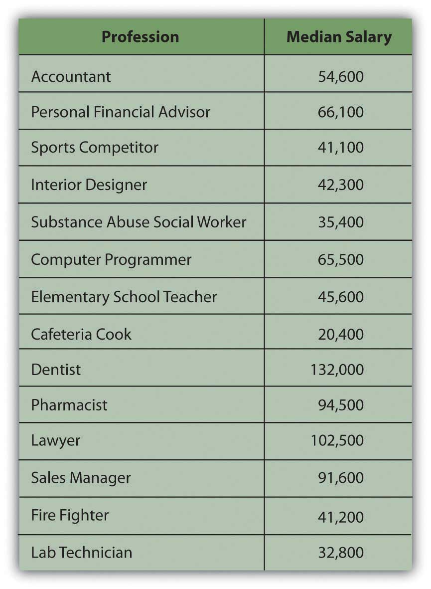
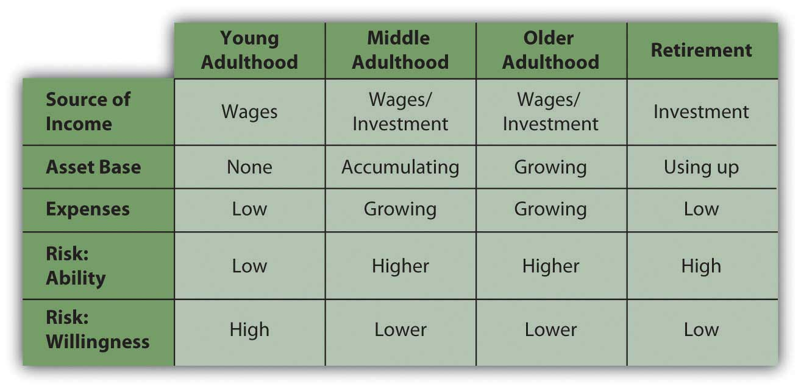

The circumstances or characteristics of your life influence your financial concerns and plans. What you want and need—and how and to what extent you want to protect the satisfaction of your wants and needs—all depend on how you live and how you’d like to live in the future. While everyone is different, there are common circumstances of life that affect personal financial concerns and thus affect everyone’s financial planning. Factors that affect personal financial concerns are family structure, health, career choices, and age.
Marital status and dependents, such as children, parents, or siblings, determine whether you are planning only for yourself or for others as well. If you have a spouse or dependents, you have a financial responsibility to someone else, and that includes a responsibility to include them in your financial thinking. You may expect the dependence of a family member to end at some point, as with children or elderly parents, or you may have lifelong responsibilities to and for another person.
Partners and dependents affect your financial planning as you seek to provide for them, such as paying for children’s education. Parents typically want to protect or improve the quality of life for their children and may choose to limit their own fulfillment to achieve that end.
Providing for others increases income needs. Being responsible for others also affects your attitudes toward and tolerance of risk. Typically, both the willingness and ability to assume risk diminishes with dependents, and a desire for more financial protection grows. People often seek protection for their income or assets even past their own lifetimes to ensure the continued well-being of partners and dependents. An example is a life insurance policy naming a spouse or dependents as beneficiaries.
Your health is another defining circumstance that will affect your expected income needs and risk tolerance and thus your personal financial planning. Personal financial planning should include some protection against the risk of chronic illness, accident, or long-term disability and some provision for short-term events, such as pregnancy and birth. If your health limits your earnings or ability to work or adds significantly to your expenditures, your income needs may increase. The need to protect yourself against further limitations or increased costs may also increase. At the same time your tolerance for risk may decrease, further affecting your financial decisions.
Your career choices affect your financial planning, especially through educational requirements, income potential, and characteristics of the occupation or profession you choose. Careers have different hours, pay, benefits, risk factors, and patterns of advancement over time. Thus, your financial planning will reflect the realities of being a postal worker, professional athlete, commissioned sales representative, corporate lawyer, freelance photographer, librarian, building contractor, tax preparer, professor, Web site designer, and so on. For example, the careers of most athletes end before middle age, have higher risk of injury, and command steady, higher-than-average incomes, while the careers of most sales representatives last longer with greater risk of unpredictable income fluctuations. Figure 1.1 "Median Salary Comparisons by Profession" compares the median salaries of certain careers.
Figure 1.1 Median Salary Comparisons by ProfessionBased on data from http://www.careeroverview.com/salary-benefits.html (accessed November 21, 2009).
Most people begin their independent financial lives by selling their labor to create an income by working. Over time they may choose to change careers, develop additional sources of concurrent income, move between employment and self-employment, or become unemployed or reemployed. Along with career choices, all these changes affect personal financial management and planning.
Needs, desires, values, and priorities all change over a lifetime, and financial concerns change accordingly. Ideally, personal finance is a process of management and planning that anticipates or keeps abreast with changes. Although everyone is different, some financial concerns are common to or typical of the different stages of adult life. Analysis of life stagesPeriods of a person’s life based on age and personal circumstances that reflect different needs, goals, and financial capabilities. is part of financial planning.
At the beginning of your adult life, you are more likely to have no dependents, little if any accumulated wealth, and few assetsResources that can be used to create future economic benefit, such as increasing income, decreasing expenses, or storing wealth as an investment.. (Assets are resources that can be used to create income, decrease expenses, or store wealth as an investment.) As a young adult you also are likely to have comparatively small income needs, especially if you are providing only for yourself. Your employment income is probably your primary or sole source of income. Having no one and almost nothing to protect, your willingness to assume risk is usually high. At this point in your life, you are focused on developing your career and increasing your earned income. Any investments you may have are geared toward growth.
As your career progresses, income increases but so does spending. Lifestyle expectations increase. If you now have a spouse and dependents and elderly parents to look after, you have additional needs to manage. In middle adulthood you may also be acquiring more assets, such as a house, a retirement account, or an inheritance.
As income, spending, and asset base grow, ability to assume risk grows, but willingness to do so typically decreases. Now you have things that need protection: dependents and assets. As you age, you realize that you require more protection. You may want to stop working one day, or you may suffer a decline in health. As an older adult you may want to create alternative sources of income, perhaps a retirement fund, as insurance against a loss of employment or income. Figure 1.3 "Financial Decisions Related to Life Stages" suggests the effects of life stages on financial decision making.
Figure 1.3 Financial Decisions Related to Life Stages
Early and middle adulthoods are periods of building up: building a family, building a career, increasing earned income, and accumulating assets. Spending needs increase, but so do investments and alternative sources of income.
Later adulthood is a period of spending down. There is less reliance on earned income and more on the accumulated wealth of assets and investments. You are likely to be without dependents, as your children have grown up or your parents passed on, and so without the responsibility of providing for them, your expenses are lower. You are likely to have more leisure time, especially after retirement.
Without dependents, spending needs decrease. On the other hand, you may feel free to finally indulge in those things that you’ve “always wanted.” There are no longer dependents to protect, but assets demand even more protection as, without employment, they are your only source of income. Typically, your ability to assume risk is high because of your accumulated assets, but your willingness to assume risk is low, as you are now dependent on those assets for income. As a result, risk tolerance decreases: you are less concerned with increasing wealth than you are with protecting it.
Effective financial planning depends largely on an awareness of how your current and future stages in life may influence your financial decisions.